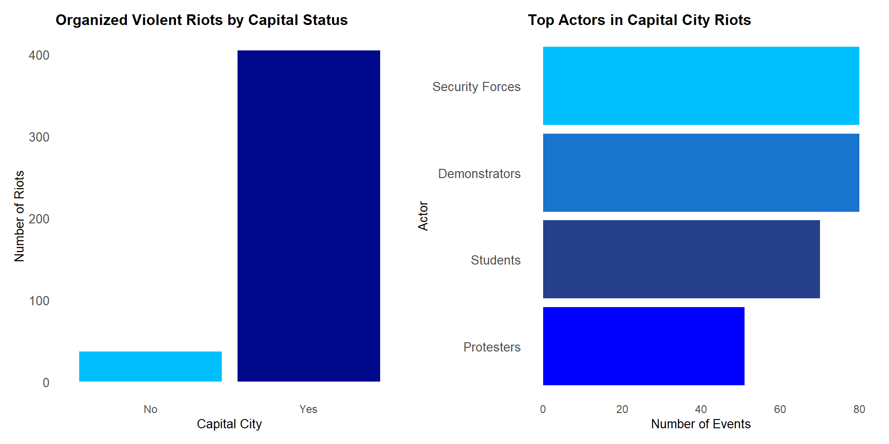

Capital cities report more violent riots, but the difference is not statistically significant.
Security forces, demonstrators, students, and protesters are the main actors in capital riots.
Urban unrest is growing around the world, and capital cities are often at the center of it. Since they hold political power and national institutions, they can be more likely to face conflict. One serious form of unrest is organized violent riots, where violence is used in a planned way by political or identity groups.
This poster looks at two things: Are capital cities more likely to face violent riots than other cities? And who are the main actors involved in these riots? By comparing cities across the world, this research helps us understand how a city’s political role shapes both where and who is involved in urban violence.
This research looks at whether capital cities are more likely to face organized violent riots than non-capitals. Using global city-level data, it explores patterns between political power and urban unrest.
The goal is to better understand how cities can prepare for conflict and make smarter policy decisions around urban safety.
This study uses the Urban Social Disorder (USD) 3.0 dataset, which tracks events of political unrest in over 180 cities from 1960 to 2014 (Bahgat et al., 2022). Each event includes details like the type of unrest, the city it happened in, and whether the city is a capital.
I focus on events labeled as organized violent riots (PTYPE = 50), which are planned violent actions by political or identity groups. Using the CAPITAL variable, I compare how often these riots happen in capital cities versus non-capitals.
To see if the difference is meaningful, I use a chi-squared test. I also look at who the main actors are in these riots, especially in capital cities.
The bar chart on the left compares the number of organized violent riots in capital and non-capital cities. Although capital cities show a much higher number of riot events, the chi-squared test result (p = 0.63) suggests that this difference is not statistically significant. This means that, based on this dataset, we cannot say that capital cities are more likely to face such riots purely because they are capitals.
On the right, the chart shows the main actors involved in organized violent riots in capital cities. The most common actors are security forces, demonstrators, and students, followed by protesters. This highlights that both state and non-state groups play key roles in these urban conflicts.
Pearson's Chi-squared test with Yates' continuity correctiondata: table_data X-squared = 0.23028, df = 1, p-value = 0.6313

In conclusion, the analysis shows that while capital cities report more organized violent riots, the difference with non-capitals is not statistically significant. The main actors in these riots are security forces, demonstrators, students, and protesters, pointing to recurring tensions between the state and civic groups in capital cities.
Thomson, Henry, Karim Bahgat, Henrik Urdal & Halvard Buhaug 2022. “Urban Social Disorder 3.0: A global, city-level event dataset of political mobilization and disorder.” Journal of Peace Research, forthcoming
Capital cities report more violent riots, but the difference is not statistically significant.
Security forces, demonstrators, students, and protesters are the main actors in capital riots.